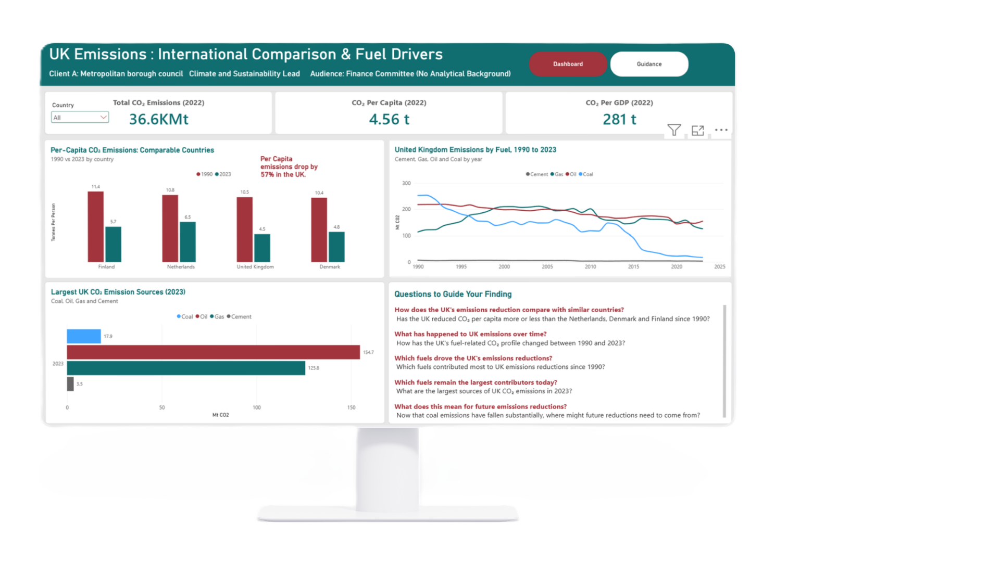
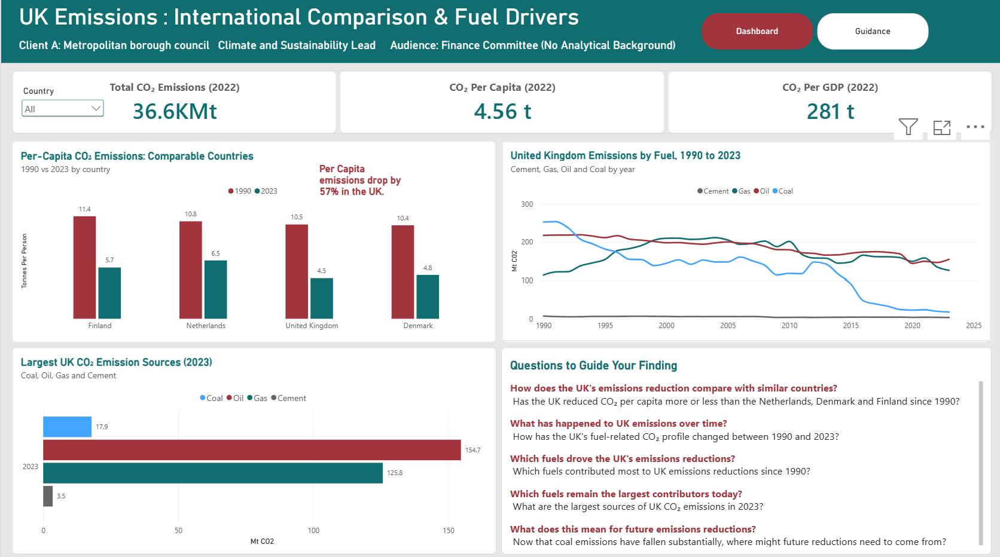

Project 1
CO2 Emmissions BI Dashboard
Role: Business Intelligence Developer
Problem: Transform complex raw datasets containing multi-decade global co2 emissions into an interactive and accessible dashboard suitable for a non-technical finance committee to understand, in order to support the residential retrofit programme bid of my client, the climate and sustainability lead of a local council.
Outcome:
- Built interactive Power BI dashboard from raw data
- Engineered custom DAX KPI metrics for trend tracking
- Enabled real-time filtering via country slicers